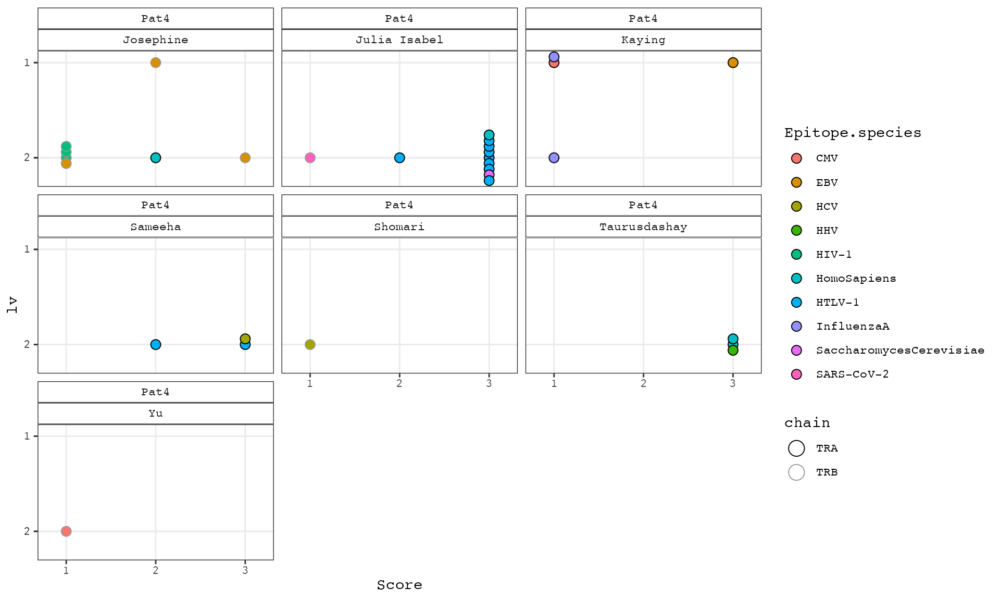

prepare_tcr_seq_data.Rmd
install.packages("tidyverse")
install.packages("randomNames")
install.packages("BiocManager")
install.packages("parallel")
install.packages("pbapply")
install.packages("ggbeeswarm")
BiocManager::install("Biostrings")Prepare a folder with sub-folder of your samples.
# vdj_path is the directory on your disk and may contain sub-folders of different samples
list.files(vdj_path)
#> [1] "Pat3_rep1_blood" "Pat4_rep1_blood"Each sub-folder must contain the 6 files from the cr output which are required to prepare a data frame as in the procedure below. Some modifications may be possible putting the functionality of downstream functions at risk though.
list.files(file.path(vdj_path, "Pat3_rep1_blood"))
#> [1] "clonotypes.csv"
#> [2] "concat_ref.fasta"
#> [3] "consensus_annotations.csv"
#> [4] "consensus.fasta"
#> [5] "filtered_contig_annotations.csv"
#> [6] "filtered_contig.fasta"Read the files of cellrangers VDJ alignment (clonotypes) arranged as described above into one long data frame:
cl_long <- igsc::read_cellranger_outs(vdj_path)
# optional:
# imgt_ref <- igsc::imgt_tcr_segment_prep()
# see ?igsc::imgt_tcr_segment_prep()
imgt_ref <- readRDS(system.file("extdata", "IMGT_ref/human/hs.rds", package = "igsc"))
# for mouse: imgt_ref <- readRDS(system.file("extdata", "IMGT_ref/mouse/mm.rds", package = "igsc"))
ata <- igsc::attach_imgt_alleles(seq = cl_long, imgt_ref = imgt_ref, pick.by = "random", lapply_fun = parallel::mclapply, mc.cores = 4)
# better set pick.by = "alignment" if you are serious about the results
cl_long <-
dplyr::left_join(cl_long, ata, by = c("consensus_seq_cr" = "seq")) %>%
tidyr::separate(VJ_IMGT, into = c("V_imgt", "J_imgt"), sep = "___")
collapse.fun <- function(x) {
paste(x,collapse = ",")
}
cl_wide <-
cl_long %>%
dplyr::select(chain, barcode, clonotype_id_cr, sample, CDR3_nt_cr, CDR3_aa_cr, V_cr, J_cr, C_cr, consensus_seq_cr, ref_seq_cr, V_imgt, J_imgt) %>%
tidyr::pivot_wider(names_from = chain, values_from = c(CDR3_nt_cr, CDR3_aa_cr, V_cr, J_cr, C_cr, consensus_seq_cr, ref_seq_cr, V_imgt, J_imgt), values_fn = collapse.fun)
cl_wide <- as.data.frame(cl_wide)With the randomNames packages you may give your clonotypes a catchy name, as an alternative to e.g. “clonotype1001”. The sampling from randomNames does not work perfect though, so we use a custom function to avoid duplicate names.
print(unique(cl_wide$sample))
#> [1] "Pat3_rep1_blood" "Pat4_rep1_blood"
cl_wide <- tidyr::separate(cl_wide, sample, into = c("patient", "replicate", "body_fluid"), sep = "_", remove = F)
temp <- dplyr::distinct(cl_wide, CDR3_nt_cr_TRA, CDR3_nt_cr_TRB, patient)
temp$cl_name <- igsc::pick_randomNames(n = nrow(temp),
gender = 2,
which.names = "first")
## only temporary to allow comparison below
temp$CDR3_nt_cr_TRA[which(is.na(temp$CDR3_nt_cr_TRA))] <- "___"
temp$CDR3_nt_cr_TRB[which(is.na(temp$CDR3_nt_cr_TRB))] <- "___"
cl_wide$CDR3_nt_cr_TRA[which(is.na(cl_wide$CDR3_nt_cr_TRA))] <- "___"
cl_wide$CDR3_nt_cr_TRB[which(is.na(cl_wide$CDR3_nt_cr_TRB))] <- "___"
for (i in 1:nrow(temp)) {
cl_wide[Reduce(intersect, list(which(cl_wide$patient == temp[i,"patient"]),
which(cl_wide$CDR3_nt_cr_TRA == temp[i,"CDR3_nt_cr_TRA"]),
which(cl_wide$CDR3_nt_cr_TRB == temp[i,"CDR3_nt_cr_TRB"]))),"cl_name"] <- temp[i,"cl_name"]
}
cl_wide$CDR3_nt_cr_TRA[which(cl_wide$CDR3_nt_cr_TRA == "___")] <- NA
cl_wide$CDR3_nt_cr_TRB[which(cl_wide$CDR3_nt_cr_TRB == "___")] <- NA
cl_long <- dplyr::left_join(cl_long, cl_wide %>% dplyr::select(patient, body_fluid, replicate, barcode, sample, cl_name), by = c("sample", "barcode"))Save the processed clonotype data. The wide format may be used to create meta-data columns in the Seurat Object. That way the phenotype data are complemented with clonotype information which are then readily available e.g. as color code on a dimension reduction plot or so.
cl <- list(cl_wide = cl_wide, cl_long = cl_long)
#saveRDS(cl, "clonotype_data.rds")Now everything is set up to systematically align IMGT TCR reference gene segments to our sequencing data of TCRs.
# find an expanded clonotype_name
top_expanded_clonotypes <- sort(table(cl[["cl_wide"]]$cl_name), decreasing = T)
head(top_expanded_clonotypes)
#>
#> Ebony Armando O'Shea Kaying Shomari Josephine
#> 33 20 17 16 16 15
# use the TCR that has been detected in most single cell transcriptomes
# check the documentation of align_imgt_ref_to_TCR_seq to understand the inputs
align_list_TRA <- igsc::align_imgt_ref_to_TCR_seq(chain = "TRA", TCR = setNames(names(top_expanded_clonotypes)[1], "cl_name"), cl_wide = cl[["cl_wide"]], cl_long = cl[["cl_long"]], imgt_ref = imgt_ref)
align_list_TRB <- igsc::align_imgt_ref_to_TCR_seq(chain = "TRB", TCR = setNames(names(top_expanded_clonotypes)[1], "cl_name"), cl_wide = cl[["cl_wide"]], cl_long = cl[["cl_long"]], imgt_ref = imgt_ref)The output of align_imgt_ref_to_TCR_seq contains several plots and sequence information.
names(align_list_TRA)
#> [1] "consensus.alingments" "consensus.seqs.uncut"
#> [3] "VJC.alignments" "VJ.alignments"
#> [5] "V.to.J.TCR.seqs"
# this plot shows how many different unique sequences existed in cl_long for this TCR; source column is consensus_seq_cr
# in different cells (single cell transcriptomes) the consensus_seq_cr may differ slightly but still the TCR is grouped into one clonotype
# sometimes there are irrelevant sequence differences at the beginning or the end, which do not affect the V(D)J-region
# if there are at least 2 different ones the consensus is used for further processing
align_list_TRA[[1]][[1]]
# the consensus sequence is available at the second index
align_list_TRA[[2]][[1]]
#> [1] "TGGGGTCTATTGGCTGAGTAGACAATGTGAGAAACCACTATGATTGTTAGAGGAAAGAAAGGAATACCCGATGATGGAAGTAGCTCTTATGGCTGGAGATTGCAGGTTTATGACTGATCCTATTTGGGAAGAACAATGATGGCAGGCATTCGAGCTTTATTTATGTACTTGTGGCTGCAGCTGGACTGGGTGAGCAGAGGAGAGAGTGTGGGGCTGCATCTTCCTACCCTGAGTGTCCAGGAGGGTGACAACTCTATTATCAACTGTGCTTATTCAAACAGCGCCTCAGACTACTTCATTTGGTACAAGCAAGAATCTGGAAAAGGTCCTCAATTCATTATAGACATTCGTTCAAATATGGACAAAAGGCAAGGCCAAAGAGTCACCGTTTTATTGAATAAGACAGTGAAACATCTCTCTCTGCAAATTGCAGCTACTCAACCTGGAGACTCAGCTGTCTACTTTTGTGCAGAGGCATCCGAGGGGAACACCGGTAACCAGTTCTATTTTGGGACAGGGACAAGTTTGACGGTCATTCCAAATATCCAGAACCCTGACCCTGCCGTGTACCAGCTGAGAGACTCTAAATCCAGTGACAAGTCTGTCTGCCTATTCACCGATTTTGATTCTCAAACAAATGTGTCACAAAGTAAGGATTCTGATGTGTATATCACAGACAAAACTGTGCTAGACATGAGGTCTATGGACTTCAAGAGCAACAGTGCTGTGGCCTGGAGCAACAAATCTGACTTTGCATGTGCAAACGCCTTC"
# at indices 3 and 4 are plots (and the respective data frames) for V(D)JC or V(D)J alignments
# these plots are made with a custom function igsc::MultiplePairwiseAlignmentsToOneSubject()
# names on the y-axis show the pattern name its the full length in nt
# number-annotations in the plot indicate the first and last nt of the alignment of the respective pattern
# vertical dashed lines indicate the lower and upper limit of all patterns aligned to the subject
align_list_TRA[[3]][[1]][[2]]
# the last sub-index contains the lower and upper limit as integers
align_list_TRA[[3]][[1]][[5]]
#> [1] 139 771
# the last index of align_list_TRA contains the V(D)J-sequence of your TCR (sequence between the vertical lines of align_list_TRA[[4]][[2]])
# if the alignment plots are as expected this sequence may be used for further processing
align_list_TRA[[5]][[1]]
#> [1] "ATGGCAGGCATTCGAGCTTTATTTATGTACTTGTGGCTGCAGCTGGACTGGGTGAGCAGAGGAGAGAGTGTGGGGCTGCATCTTCCTACCCTGAGTGTCCAGGAGGGTGACAACTCTATTATCAACTGTGCTTATTCAAACAGCGCCTCAGACTACTTCATTTGGTACAAGCAAGAATCTGGAAAAGGTCCTCAATTCATTATAGACATTCGTTCAAATATGGACAAAAGGCAAGGCCAAAGAGTCACCGTTTTATTGAATAAGACAGTGAAACATCTCTCTCTGCAAATTGCAGCTACTCAACCTGGAGACTCAGCTGTCTACTTTTGTGCAGAGGCATCCGAGGGGAACACCGGTAACCAGTTCTATTTTGGGACAGGGACAAGTTTGACGGTCATTCCAA"The obtained V(D)J-sequences can then be used to concatenate the complete TCR (attach the constant gene segment) or a whole expression cassette with additional elements like a P2A element, restriction sites, etc. Below one possible cassette is created. A fasta file with cassette elements is included in this package.
tcr_cassette_elements <- igsc:::read_fasta(system.file("extdata", "TCR_cassette_elements.fasta", package = "igsc"))
# concatenate
concat_seq <- toupper(paste0(tcr_cassette_elements[["NotI_site"]], # left restriction site
tcr_cassette_elements[["Kozak_sequence_noATG"]], # eukaryotic translation initiation
align_list_TRB[["V.to.J.TCR.seq"]], # TRB V->J chain
substr(tcr_cassette_elements[["mTRBC2_Ser57Cys_STOPcodon_removed"]],
2,
nchar(tcr_cassette_elements[["mTRBC2_Ser57Cys_STOPcodon_removed"]])), # mTRBC, see info below
tcr_cassette_elements[["gsg_linker"]], # linker that provides flexibility for more efficient cleavage
tcr_cassette_elements[["P2A_element"]], # a cleavable linker
align_list_TRA[["V.to.J.TCR.seq"]], # TRA V->J chain
substr(tcr_cassette_elements[["mTRAC_Thr48Cys"]],
2,
nchar(tcr_cassette_elements[["mTRAC_Thr48Cys"]])), #mTRAC, see info below
tcr_cassette_elements[["EcoRI_site"]]) # right restriction site
)
print(concat_seq)
#> [1] "GCGGCCGCGCCACCAGGATCTGAGAAATGTGACTCCACCCAAGGTCTCCTTGTTTGAGCCATCAAAAGCAGAGATTGCAAACAAACAAAAGGCTACCCTCGTGTGCTTGGCCAGGGGCTTCTTCCCTGACCACGTGGAGCTGAGCTGGTGGGTGAATGGCAAGGAGGTCCACAGTGGGGTCTGCACGGACCCTCAGGCCTACAAGGAGAGCAATTATAGCTACTGCCTGAGCAGCCGCCTGAGGGTCTCTGCTACCTTCTGGCACAATCCTCGAAACCACTTCCGCTGCCAAGTGCAGTTCCATGGGCTTTCAGAGGAGGACAAGTGGCCAGAGGGCTCACCCAAACCTGTCACACAGAACATCAGTGCAGAGGCCTGGGGCCGAGCAGACTGTGGAATCACTTCAGCATCCTATCATCAGGGGGTTCTGTCTGCAACCATCCTCTATGAGATCCTACTGGGGAAGGCCACCCTATATGCTGTGCTGGTCAGTGGCCTGGTGCTGATGGCCATGGTCAAGAAAAAAAATTCCGGCAGCGGCGCCACCAACTTCAGCCTGCTGAAGCAGGCCGGCGACGTGGAAGAGAACCCCGGGCCCACATCCAGAACCCAGAACCTGCTGTGTACCAGTTAAAAGATCCTCGGTCTCAGGACAGCACCCTCTGCCTGTTCACCGACTTTGACTCCCAAATCAATGTGCCGAAAACCATGGAATCTGGAACGTTCATCACTGACAAATGCGTGCTGGACATGAAAGCTATGGATTCCAAGAGCAATGGGGCCATTGCCTGGAGCAACCAGACAAGCTTCACCTGCCAAGATATCTTCAAAGAGACCAACGCCACCTACCCCAGTTCAGACGTTCCCTGTGATGCCACGTTGACTGAGAAAAGCTTTGAAACAGATATGAACCTAAACTTTCAAAACCTGTCAGTTATGGGACTCCGAATCCTCCTGCTGAAAGTAGCCGGATTTAACCTGCTCATGACGCTGAGGCTGTGGTCCAGTTGAGAATTC"Please note, that the the original sequences of constant chains have been altered. One codon each has been changed to a Cysteine (Ser57Cys, Thr48Cys) for TRB and TRA, respectively. This increases stability of the chain pairing. Moreover, in this example of human TCRs constant chain are taken from mouse which has several reasons. It decreases mispairing with (if present) endogenous TCR and positive transductants may easily be identified by a mAb for mTCRb (clone H57-597).
Similar CDR3s are found by simple string matching with the levensthein algorithm. Additionally, differences between CDR3-‘peptides’ can be expressed more continuously by similarity based on the PAM30 substitution matrix, taking into account chemical properties of amino acids.
vdjdb <-
readRDS(system.file("extdata", "vdjdb.tsv.rds", package = "igsc")) %>%
dplyr::filter(Species == "HomoSapiens")
# filter for highly expanded clonotypes
cl_long <- cl_long %>% dplyr::filter(cl_name %in% names(table(cl_long$cl_name)[which(table(cl_long$cl_name) > 12)]))
matches <- igsc::vdjdb_hits(tcrs = cl_long,
vdjdb = vdjdb,
mapply_fun = parallel::mcmapply,
lapply_fun = parallel::mclapply,
PAM30_similarity = F,
mc.cores = 4)
matches_append <-
cl_long %>%
dplyr::left_join(matches) %>%
dplyr::left_join(vdjdb)
#> Joining, by = c("chain", "CDR3_aa_cr")
#> Joining, by = c("CDR3", "Gene")
df <-
matches_append %>%
dplyr::distinct(CDR3, CDR3_aa_cr, lv, Gene, chain, cl_name, patient, Epitope, Epitope.gene, Epitope.species, Score) %>%
tidyr::drop_na() %>%
dplyr::filter(lv < 3) %>%
dplyr::filter(Score > 0)
ggplot(df, aes(x = Score, y = lv, fill = Epitope.species, color = chain)) +
ggbeeswarm::geom_beeswarm(groupOnX = F, cex = 6, size = 3, shape = 21) +
#geom_jitter(width = 0.15, height = 0.15, shape = 21, size = 3) +
theme_bw() +
theme(panel.grid.minor.x = element_blank(), panel.grid.minor.y = element_blank(), strip.background = element_rect(fill = "white"), text = element_text(family = "Courier")) +
scale_x_continuous(breaks = fcexpr::int_breaks(n = 3), limits = c(0.8,3.2)) +
scale_y_reverse(breaks = fcexpr::int_breaks(n = 3)) +
scale_color_manual(values = c("black", "grey60")) +
guides(fill = guide_legend(override.aes = list(size = 3)), color = guide_legend(override.aes = list(size = 5))) +
facet_wrap(vars(patient, cl_name))
# matches of high score (confidence level from vdjdb x-axis) and low levensthein distance (lv, y-axis) are most interesting